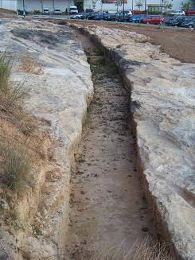
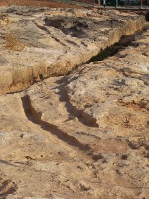
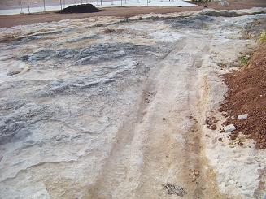

|
LA
COVA TELLA
En la Pobla de Vallbona, en la Cova
Tella, se localiza un camino íbero con sus carriladas y un
canal de época romana. El camino ibero excavado en la roca conserva un
tramo de 68m. y tiene un ancho de vía de 1,90-2m
|
Según los estudios realizados, se trata de un
canal o acueducto que data del siglo II a.e.c. Los restos
arqueológicos están junto al ecoparque de la Pobla, al lado de la
carretera de acceso a la zona comercial del "el Osito".
Según los últimos estudios el canal se ha datado en época islámica. En La Pobla también se han hallado restos de
cerámica de la Edad de Bronce.
De época romana son los hallazgos en Sant Jaume de Sesoliveres donde
aparecieron restos de tegulae romana, de cerámica y una moneda de
tiempos del emperador Claudio. Otro yacimiento es el de la Plaza de
los Mártires, situado en el casco urbano y en el que todavía se
conservan restos de una cisterna romana. |
 |
|
 |
 |
 |
|